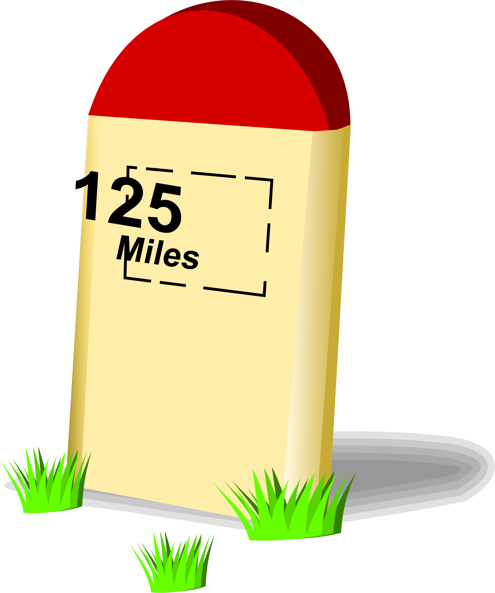

| 1 2 3 4 5 6 7 8 9 10 11 12 13 14 15 16 17 18 19 20 21 22 23 24 25 26 27 28 29 30 31 32 33 34 35 36 37 38 39 40 41 42 43 44 45 46 47 48 49 50 51 | ||
| - = 14 Jan 2018 = - | ||
| 22:26:11 | CONFIG | |
| 22:24:10 | TODO | |
| 22:22:54 | BUG | |
| 22:21:45 | GITHUB | |
| 22:16:43 | BACKUP | |
| 22:05:47 | FIXED | |
| 21:58:04 | DEBUG | |
| 21:57:11 | BUG | |
| 20:58:19 | FIXED | |
| 20:56:36 | FIXED | |
| 20:37:45 | FIXED | |
| 20:32:03 | DEBUG | |
| 20:27:48 | FONT | |
| 20:25:37 | BUG | |
| 20:20:27 | BUG | |
| 20:18:50 | TEST | |
| 20:18:42 | FIXED | |
| 20:16:33 | TEST | |
| 20:16:27 | COCKROACH | |
| 20:14:56 | TEST | |
| 20:14:50 | STUPIDITY | |
| 19:50:10 | TEST | |
| 19:50:05 | FIXED | |
| 19:48:05 | LAZY |  An alias to an existing love routine with the same function (and returned values) will save me from needlessly searching my entire code to fix all those functions out to get all nil values out. An alias to an existing love routine with the same function (and returned values) will save me from needlessly searching my entire code to fix all those functions out to get all nil values out.What's it to you? It fixes this issue and a lot of work is saved! |
| 19:46:00 | FIXED | |
| 19:43:04 | OFFTOPIC | |
| 19:42:45 | TEST | |
| 19:42:35 | LINK | |
| 19:41:23 | FIXED | |
| 19:41:17 | FIXED | |
| 19:41:11 | TEST | |
| 19:38:31 | FIXED | |
| 19:31:51 | LINUX | |
| 19:31:45 | WINDOWS | |
| 19:31:28 | MAC | |
| 19:30:18 | FIXED | |
| 19:29:32 | BUG | |
| 19:25:13 | TEST | |
| 19:23:53 | LAZY | |
| 19:23:41 | SITE | |
| 19:17:10 | TEST | |
| 19:17:04 | FIXED | |
| 19:01:33 | FIXED | |
| 19:01:26 | BUG | |
| 18:59:49 | TEST | |
| 18:59:42 | FIXED | |
| 18:58:27 | FIXED | |
| 18:58:20 | BUG | |
| 18:58:12 | FIXED | |
| 18:48:14 | BUG | Error: [string "Libs/rpg.rel/rpg.lua"]:370: attempt to concatenate local 'char' (a nil value)Hmmm..... |
| 18:44:01 | TEST | |
| 18:43:54 | FIXED | |
| 18:43:36 | STUPIDITY | |
| 18:42:18 | TEST | |
| 18:40:55 | RYANNA | |
| 18:39:56 | TEST | |
| 18:38:58 | DONE | |
| 18:38:05 | DONE | |
| 18:34:33 | STATUS | |
| 18:33:56 | SCRIPT | |
| 18:30:54 | LINK | |
| 18:30:13 | SITE | |
| 18:21:14 | DONE | |
| 17:00:26 | FAILURE | |
| 16:59:56 | NOTE | |
| 16:57:20 | NOTE | |
| 16:56:05 | NOTE | |
| 16:55:20 | SCRIPT | |
| 15:34:25 | STATUS | |
| 15:16:03 | FONT | |
| 14:25:52 | FONT | |
| 13:36:00 | NOTE | |
| 13:28:35 | BLITZMAX | |
| 00:17:35 | FAILURE |  And everything lags.... I guess I need to turn this damn thing off completely tonight.... And everything lags.... I guess I need to turn this damn thing off completely tonight.... |
| - = 13 Jan 2018 = - | ||
| 23:41:50 | STATUS | |
| 23:41:26 | CONFIG | |
| 23:41:03 | BACKUP | |
| 23:40:28 | STATUS | |
| 23:38:25 | AUDIO | The narrator's voice has been recorded |
| 23:15:07 | NOTE | |
| 23:14:28 | TEST | |
| 23:11:04 | GITHUB | |
| 23:06:16 | UPDATED | |
| 23:00:55 | STATUS | |
| 22:56:06 | FIXED | |
| 22:53:48 | FIXED | |
| 22:53:34 | FIXED | |
| 22:49:39 | OFFTOPIC | Either I work too hard or I got too much to do to get this to work or... I talk too much... |
| 22:48:49 | STUPIDITY | |
| 22:45:37 | DEBUG | |
| 22:45:20 | BUG | |
| 22:22:38 | NOTE | |
| 22:19:17 | DONE | |
| 21:19:42 | DEBUG | |
| 21:05:17 | STATUS | |
| 20:52:10 | TODO | I do not expect however that this will really lead to serious trouble, as the replacement APIs are either sufficient enough to just change a few lines of code, or even to rewrite completely in Lua... At least I don't expect that, since this routine was already written in Lua as much as possible. |
| 20:49:02 | DONE | |
| 19:47:12 | GITHUB | |
| 19:46:12 | BACKUP | |
| 19:45:02 | STATUS | |
| 19:43:42 | STATUS | |
| 19:21:11 | FIXED | |
| 18:40:21 | FIXED | |
| 17:56:14 | FIXED | |
| 17:56:05 | DEBUG | |
| 17:52:58 | DEBUG | |
| 17:51:16 | COCKROACH | |
| 17:46:07 | COCKROACH | Error: [string "Libs/Lib_kthura.rel/Draw.lua"]:142: attempt to index local 'cnode' (a nil value) |
| 17:43:16 | FIXED | |
| 17:41:35 | FIXED | |
| 17:40:03 | FIXED | |
| 17:39:38 | FIXED | |
| 17:36:32 | DEBUG | |
| 17:35:53 | DUMP |
|
| 17:31:58 | FAILURE | |
| 17:21:35 | DEBUG | |
| 17:21:26 | BUG | |
| 17:20:29 | FIXED | |
| 17:07:10 | BUG | |
| 16:54:13 | TEST | |
| 16:53:52 | DONE | |
| 16:52:39 | DONE | |
| 16:22:27 | ENHANCEMENT | |
| 16:16:45 | SCRIPT | This will be checked for zone actions in order to find out if Ryanna (or whoever else in in the lead at the present time) |
| 15:46:15 | UPDATED | |
| 15:21:34 | SCRIPT | |
| 14:53:17 | STATUS | |
| 14:31:25 | DONE | |
| 14:24:12 | TEST | |
| 14:22:31 | COCKROACH | |
| 14:14:44 | TEST | |
| 14:12:31 | DUMP |
|
| 14:11:28 | TEST | |
| 14:11:10 | STUPIDITY | |
| 14:06:53 | DUMP |
|
| 14:05:24 | TEST | |
| 14:05:04 | DEBUG | |
| 14:04:52 | COCKROACH | |
| 14:00:35 | TEST | |
| 14:00:30 | COCKROACH | |
| 13:59:32 | TEST | |
| 13:59:26 | FAILURE | |
| 13:58:31 | TEST | |
| 13:51:44 | DONE | |
| 13:18:26 | KTHURA | |
| 13:06:19 | FIXED | |
| 13:04:03 | DEBUG | "Eliminate all the impossible and whatever remains, however improbably must be the truth". Well this error is the impossible, but it happens, so what is the truth that remains? |
| 12:56:36 | KTHURA | |
| 12:46:19 | SCRIPT | |
| 12:42:15 | RYANNA | |
| 00:16:47 | STATUS | |
| 00:08:17 | TODO | |
| 00:06:29 | CONFIRMED | |
| - = 12 Jan 2018 = - | ||
| 23:57:59 | CLOSED | |
| 23:57:54 | CLOSED | |
| 23:55:33 | OFFTOPIC | Debugging is twice as hard as writing the code in the first place. Therefore, if you write the code as cleverly as possible, you are, by definition, not smart enough to debug it. |
| 23:55:06 | CONFIRMED | -- Brian Kernighan |
| 23:53:57 | CLEANUP | |
| 23:53:20 | FIXED | |
| 23:52:12 | COCKROACH | |
| 23:49:47 | STUPIDITY | |
| 23:41:28 | COCKROACH | |
| 23:38:34 | FIXED | |
| 23:33:44 | FIXED | |
| 23:16:53 | FIXED | |
| 23:16:47 | GO | |
| 23:06:15 | NOTE | |
| 23:05:47 | RYANNA | |
| 22:27:16 | SCRIPT | |
| 22:26:26 | DONE | |
| 21:58:37 | DONE | |
| 21:49:10 | SCRIPT | |
| 21:47:44 | SITE | |
| 21:43:16 | DONE | Well that was a good break |
| 20:32:36 | TODO | |
| 20:32:26 | TODO | |
| 20:32:16 | TODO | |
| 20:31:25 | NOTE | |
| 20:30:42 | SCRIPT | |
| 20:23:50 | CONFIRMED | |
| 20:19:51 | SCRIPT | |
| 20:19:04 | MAP | |
| 20:10:01 | BACKUP | |
| 20:07:33 | MILESTONE | This brings us to the points that I can actually begin with adding some more functionality to the game, but setting up stuff like ZA_Enter, and that's an important feature, as that feature is basically the glue between the walking in the field in general and story events. ZA stands for 'Zone Action'. That should be interpreted as when you enter this zone, do this.... In both Star Story and TFT REVAMPED I used to use a file that was automatically included to the MapScript for that. Since LÖVE which does not have this multi-VM approach LAURA II had (and that's why I hate it that the Bubble project had failed, although I am thinking to transfer Maan to it,as the GUI interface I have for Go appears a lot more stable), I think it will now be more efficient to put the ZA system in the field library. Of course I also need to add the BoxText routine and stuff like that now, so there is really a crapload of stuff to do before the real game begins, but this is one of the most important milestones for now. The game now official *has* playable content, for what that's worth ;) |
| 20:00:31 | MILESTONE | AND WALKING AROUND WORKS!!! |
| 19:59:15 | SITE | |
| 19:58:27 | CONFIRMED | |
| 19:48:29 | DONE | |
| 19:10:43 | DONE | |
| 18:42:11 | COCKROACH | |
| 17:50:04 | FIXED | |
| 17:14:51 | ART | I'm not yet entirely happy, but for now this will have to do.... If you see how to improve her, tell me ;) |
| 16:49:44 | CLOSED | |
| 16:48:26 | GITHUB | |
| 16:47:14 | BACKUP | |
| 16:46:12 | DEBUG | |
| 16:33:35 | JUDGMENT | |
| 16:28:46 | KTHURA | |
| 16:17:03 | DONE | |
| 15:42:49 | FAILURE | |
| 1 2 3 4 5 6 7 8 9 10 11 12 13 14 15 16 17 18 19 20 21 22 23 24 25 26 27 28 29 30 31 32 33 34 35 36 37 38 39 40 41 42 43 44 45 46 47 48 49 50 51 | ||